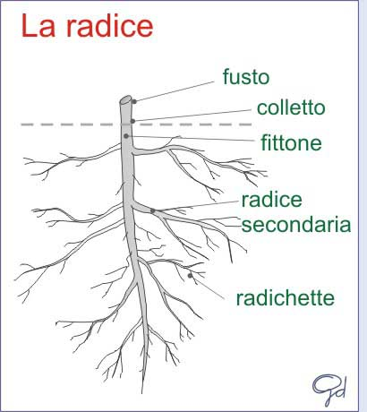

La
radice è la parte del
cormo che deriva dallo sviluppo del polo radicale dell'embrione e cresce normalmente in direzione inversa a quella del
caule, introducendosi e radicandosi profondamente nel substrato.
La forma, la struttura e le dimensioni sono in stretto rapporto con le sue funzioni e variano in relazione all'ambiente in cui la radice si sviluppa, si hanno così diversi tipi di radice:
Primarie o principali sono le prime radici che si sviluppano dal seme.
Di secondo, terzo…ecc. ordine, sono quelle che si originano dalla ramificazione della radice primaria
Funzioni della radice
Assorbimento: di acqua e sali minerali in essa disciolti assicurando un continuo approvvigionamento idrico necessario alla crescita e sopravvivenza della pianta.
Ancoraggio: sostiene e mantiene la pianta attaccata al terreno
Riserva : è il principale organo di riserva della pianta in quanto è formata soprattutto da parenchime di riserva
Produzione di ormoni
Le radici si possono suddividere in tre gruppi, nell'ambito dei quali ci possono essere forme diverse:
|
|
Radici a fittone: costituite da una radice diritta più importante e radici secondarie laterali ramificate in radichette.
|
|
|
Radici fascicolate: costituite da un insieme di radici suddivise in fasci, che si dirama dal colletto. La maggior parte delle Graminacee ha radici fascicolate.
|
|
|
Radici avventizie: costituite da una radice diritta più importante e radici secondarie laterali ramificate in radichette.
|
Altre forme di radice possono essere: